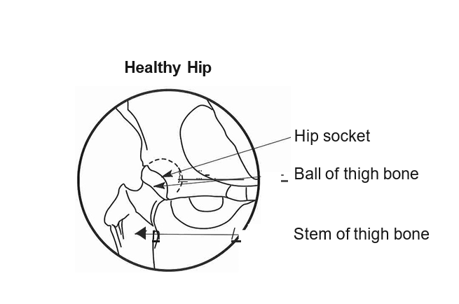
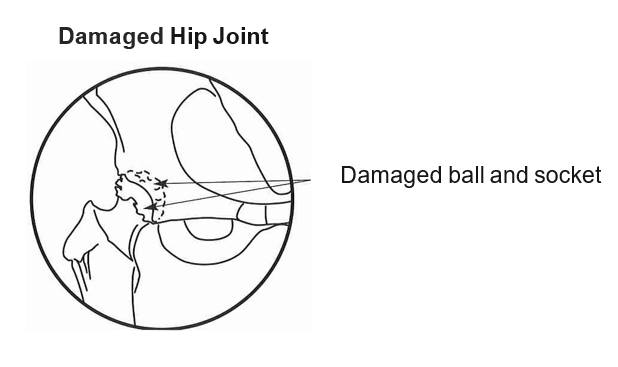
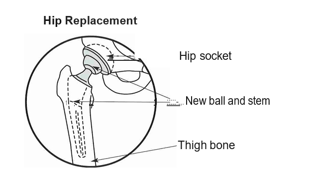

Most people have a hip replacement because the cartilage (or cushioning) between the bones in their hip has worn away. This causes the bones to rub against each other, which then causes pain and stiffness in the hip. The pain might be keeping you awake at night. It may be causing you to cut back or stop doing your normal, everyday activities. You may have tried other treatments like medicine and exercise, but the pain and stiffness didn't get better or got worse. A hip replacement means that the damaged hip joint is taken out and replaced with parts made of metal, plastic and metal, or ceramic and metal. The pain should stop or be much less.
There are 3 types of hip replacement surgery. Your surgeon will tell you which type you need. 1. Total hip replacement: The entire hip joint is taken out and replaced with new parts. The type of approach will be determined by your surgeon. 2. Hip resurfacing: Only the damaged surfaces in the hip joint are taken out and replaced with new parts. 3. Hip revision: The parts used to replace the hip have become damaged or loose and have to be taken out and replaced with new ones. There are many types of hip replacement parts. The type you need depends on the condition of your hip, your age, weight, and the activities you like to do. Your surgeon will speak with you about the type that's best for you.
  While hip replacements are usually safe, there are some risks. Your surgeon and healthcare team will talk to you about the risks. Some of the risks of surgery and what's done to decrease them are listed below: • Infection: Germs can enter your body from anywhere (e.g., teeth, skin, or throat) and cause an infection. Certain medical conditions and lifestyle choices can put you at a greater risk of surgical infections. Antibiotics are given before and after surgery to prevent infection. Make sure to tell your surgeon or case manager if you have or think you have an infection. • Blood clots: A blood clot happens when blood collects into a clump and can be very serious if it moves to the lungs. You'll be given a blood thinner to help prevent a blood clot. In addition to taking your blood thinners, getting up and moving around as soon as possible after surgery can help prevent a blood clot. Make sure you tell your surgeon or case manager if you've ever had a blood clot. • Heart attack, breathing or lung problems, stroke, allergic reaction to medicine, or death: These are risks with any surgery. You and your healthcare team will work together to lower your risk. • Dislocation: This is when the ball of the new hip joint pops out of the socket. You can help prevent this by following the steps in this guide and using your equipment and aids until your healthcare team says you don't need them anymore. • Your operated leg may be longer after surgery: If this happens, it's usually only a small increase and doesn't need to be treated. A shoe lift can help if you need it. • A break in the bone around your new joint: You may need to put less weight on the leg or have another surgery. • Nerve damage, bleeding, or injury to a blood vessel: You may notice a loss of feeling or movement after surgery. Be sure to tell your healthcare team about any changes. • The new hip parts become loose: Your new hip joint may become loose over time. It's important to go to all your follow-up clinic visits after surgery. Make sure you tell your doctor if you have any new pain in your hip. You may need surgery again if your hip joint becomes too loose.